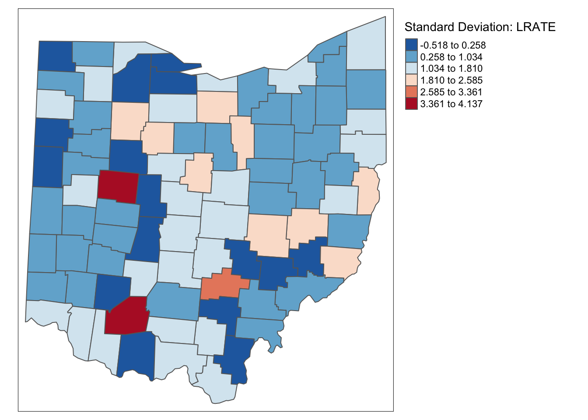
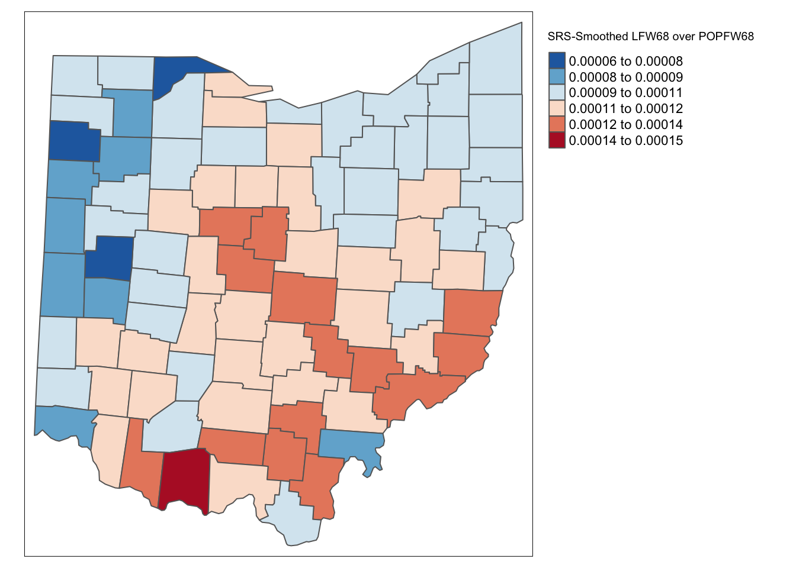
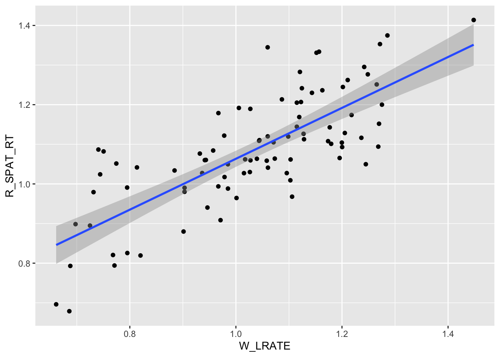
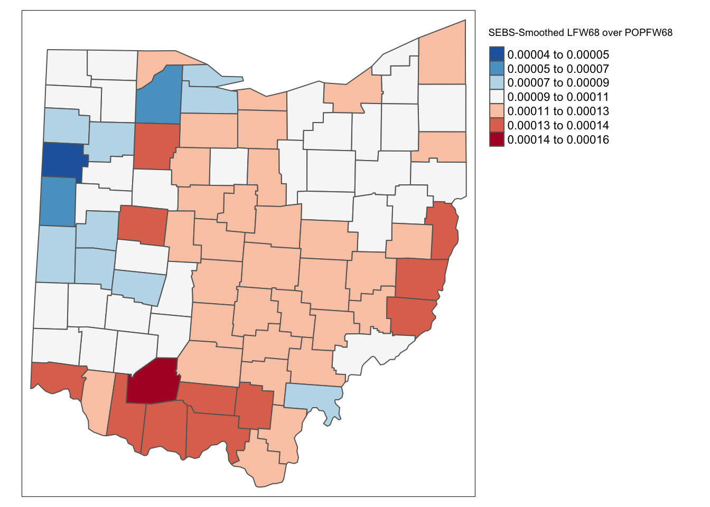

Chapter 9 Applications of Spatial Weights
Introduction
This notebook cover the functionality of the Applications of Spatial Weights section of the GeoDa workbook. We refer to that document for details on the methodology, references, etc. The goal of these notes is to approximate as closely as possible the operations carried out using GeoDa by means of a range of R packages.
The notes are written with R beginners in mind, more seasoned R users can probably skip most of the comments on data structures and other R particulars. Also, as always in R, there are typically several ways to achieve a specific objective, so what is shown here is just one way that works, but there often are others (that may even be more elegant, work faster, or scale better).
For this notebook, we use Cleveland house price data. Our goal in this lab is show how to assign spatial weights based on different distance functions.
Objectives
After completing the notebook, you should know how to carry out the following tasks:
Create a spatially lagged variable as an average or sum of the neighbors
Create a spatially lagged variable as a window sum or average
Create a spatially lagged variable based on inverse distance weights
Create a spatially lagged variable based on kernel weights
Rescaling coordinates to obtain inverse distance weights
Compute and map spatially smoothed rates
Compute and map spatial Empirical Bayes smoothed rates
R Packages used
sf: To read in the shapefile.
spdep: To create k-nearest neighbors and distance-band neighbors, calculate distances between neighbors, convert to a weights structure, and coercion methods to sparse matrices.
knitr: To make nicer looking tables
ggplot2: To make a scatterplot comparing two different rate variables
tmap: To make maps of different spatial rate variables
broom: To get regression statistics in a tidy format
GGally: To make a parallel coordinates plot
purrr: To map a centroid function of the geometry column of an sf data structure
geodaData: To access the data for this notebook
tidyverse: Basic data frame manipulation
R Commands used
Below follows a list of the commands used in this notebook. For further details and a comprehensive list of options, please consult the R documentation.
Base R:
install.packages,library,setwd,class,str,lapply,attributes,summary,head,seq,as,cbind,max,unlist,length,sqrt,exp,diag,sort,append,sumsf:
st_read,plotspdep:
knn2nb,dnearneigh,knearneigh,nb2listw,mat2listw,EBlocal,lag.listw,include.selfknitr:
kableggplot2:
ggplot,geom_smooth,geom_point,ggtitletmap:
tm_shape,tm_fill,tm_border,tm_layoutbroom:
tidyGGally:
ggparcoordpurrr:
map_dbltidyverse:
mutate
Preliminaries
Before starting, make sure to have the latest version of R and of packages that are compiled for the matching version of R (this document was created using R 3.5.1 of 2018-07-02). Also, optionally, set a working directory, even though we will not actually be saving any files.25
Load packages
First, we load all the required packages using the library command. If you don’t have some of these in your system, make sure to install them first as well as
their dependencies.26 You will get an error message if something is missing. If needed, just install the missing piece and everything will work after that.
geodaData
All of the data for the R notebooks is available in the geodaData
package. We loaded the library earlier, now to access the individual
data sets, we use the double colon notation. This works similar to
to accessing a variable with $, in that a drop down menu will
appear with a list of the datasets included in the package. For this
notebook, we use clev_pts.
If you choose to download the data into your working directory, you will need to go to Cleveland Home Sales The download format is a
zipfile, so you will need to unzip it by double clicking on the file in your file
finder. From there move the resulting folder titled: nyc into your working directory
to continue. Once that is done, you can use the sf function: st_read() to read
the shapefile into your R environment.
Spatially lagged variables
With a neighbor structure defined by the non-zero elements of the spatial weights matrix W, a spatially lagged variable is a weighted sum or a weighted average of the neighboring values for that variable. In most commonly used notation, the spatial lag of y is then expressed as Wy. .
Formally, for observation i, the spatial lag of \(y_i\), referred to as \([Wy]_i\) (the variable Wy observed for location i) is: \[[Wy]_i = w_{i1}y_1 + w_{i2}y_2 + ... + w_{in}y_n\] or, \[[Wy]_i = \sum_{j=1}^nw_{ij}y_j\] where the weights \(w_{ij}\) consist of the elements of the i-th row of the matrix W, matched up with the corresponding elements of the vector y.
In other words, the spatial lag is a weighted sum of the values observed at neighboring locations, since the non-neighbors are not included (those i for which \(w_{ij}=0\)). Typically, the weights matrix is very sparse, so that only a small number of neighbors contribute to the weighted sum. For row-standardized weights, with\(\sum_jw_{ij} = 1\), the spatially lagged variable becomes a weighted average of the values at neighboring observations.
In matrix notation, the spatial lag expression corresponds to the matrix product of the n × n spatial weights matrix W with the n × 1 vector of observations y, or W × y. The matrix W can therefore be considered to be the spatial lag operator on the vector y.
In a number of applied contexts, it may be useful to include the observation at location i itself in the weights computation. This implies that the diagonal elements of the weights matrix must be non-zero, i.e., \(w_{ii}≠0\). Depending on the context, the diagonal elements may take on the value of one or equal a specific value (e.g., for kernel weights where the kernel function is applied to the diagonal). We will highlight this issue in the specific illustrations that follow.
Creating a spatially lagged variable
In this section, we will go through the four different spatial lag options covered in the Geoda workbook. These are Spatial lag with row-standardized weights, ** Spatial lag as a sum of neighboring values, Spatial window average, and Spatial window sum**.
Creating the weights
To start, we will need to make our weights in order to follow along with the Geoda workbook example. This will require making a k-nearest neighbors for k = 6 with row standarized weights.
The process for making these weights is the same as covered in earlier notebooks. However, to summarize, we
start by getting the coordinates in a separate matrix with the base R function cbind, then use that with
the spdep functions knn2nb and knearneigh to compute a neighbors list. From there we convert the
neighbors list to class listw with nb2listw. This will result in row standardized weights. It is
important to note that we will have to work with neighbors structure in some cases to get the desired
functionality, which will require creating more than one weights object for the k-nearest neighbors weights
used in this section of the notebook.
# getting coordinates
coords <- cbind(clev.points$x,clev.points$y)
# creating neighbors list
k6 <- knn2nb(knearneigh(coords, k = 6))
# converting to weights structure from neighbors list
k6.weights1 <- nb2listw(k6)
k6.weights1$weights[[1]]## [1] 0.1666667 0.1666667 0.1666667 0.1666667 0.1666667 0.1666667Spatial lag with row-standardized weights
The default case in Geoda is to use row-standardized weights and to leave out the diagonal element. Implementing this
will be relatively simple, as we will only need one line of code with the weights structure:
k6.weights1. To create the lag variable, the spdep function, lag.listw is used. The inputs require
a weights structure and a variable with the same length as the weights structure. The length should not
be a problem if the variable comes from the same dataset used to create your weights.
We create a new data frame of the sale_price variable and the lag variable to get a side by side
look. To get a brief look at the first few observations of both variables, we use head. Then to get
a nicer looking table, we use kable from the knitr package.
lag1 <- lag.listw(k6.weights1, clev.points$sale_price)
df <- data.frame(sale_price = clev.points$sale_price, lag1)
kable(head(df))| sale_price | lag1 |
|---|---|
| 235500 | 79858.33 |
| 65000 | 90608.33 |
| 92000 | 71041.67 |
| 5000 | 91375.00 |
| 116250 | 72833.33 |
| 120000 | 74041.67 |
The values match with the example from the Geoda workbook, only difference being in that it is rounded to less significant figures than GeoDa.
The lag variables are calculated in this instance, by taking an average of the neighboring values. We will illustrate this by finding the neighboring sale price values for the first observation. To get these values, we get the neighbor ids for the first observation by double bracket notation. We then select the sale price values by indexing with the resulting numeric vector.
## [1] 65000 120000 131650 81500 76000 5000We now verify the value for the spatial lag listed in the table. It is obtained as the average of the sales price for the six neighbors, or (131650 + 65000 + 81500 + 76000 + 120000 + 5000)/6 = 79858.33.
We can quickly assess the effect of spatial averaging by comparing the descriptive statistics for the lag variable with those of the original sale price variable.
## Min. 1st Qu. Median Mean 3rd Qu. Max.
## 1049 9000 20000 41897 48500 527409## Min. 1st Qu. Median Mean 3rd Qu. Max.
## 6583 16142 26500 39818 54417 229583As seen above, the range for the original sale price variable is 1,049 to 527,409. The range for the lag variable is much more compressed, being 6,583 to 229,583. The typical effect of spatial lag is a compression of the range and variance of a variable. We can see this further when examing the standard deviation.
## [1] 60654.34## [1] 36463.76The standard deviation for home sales gets significantly condensed from 60654.34 to 36463.76 in the creation of the lag variable.
PCP
To get a more dramatic view of the influence of high-valued or low-valued neighbors on the spatial lag, we use a parallel coordinates plot. This will be done using GGally, which is an R package that builds off of the ggplot2 package for some more complicated plots, ie the parallel coordinates plot and the scatter plot matrix. We won’t go in depth about the different options this package offers in this notebook, but if interested, check out GGally documentation.
To make the pcp with just the two variables, we will need to put them in a separate matrix, or data
frame. We use cbind to do this, as with the coordinates. From there we use ggparcoord from the GGally
package. The necessary inputs are the data(pcp.vars) and the scale parameter. We use `scale = “globalminmax”
to keep the same price values as our lag variable and sale price variable. The default option scales it down,
which is not what we are looking for in this case.
sale.price <- clev.points$sale_price
pcp.vars <- cbind(sale.price,lag1)
ggparcoord(data = pcp.vars,scale ="globalminmax") +
ggtitle("Parallel Coordinate Plot")
Spatial lag as a sum of neighboring values
We can calculate spatial lag as a sum of neighboring values by assigning
binary weights. This requires us to go back to our neighbors list, then
apply a function that will assign binary weights, then we use glist = in
the nb2listw function to explicitly assign these weights.
We start by applying a function that will assign a value of 1 per each neighbor. This is done with lapply, which we have been using to manipulate
the neighbors structure throughout the past notebooks. Basically it applies
a function across each value in the neighbors structure.
binary.weights <- lapply(k6, function(x) 0*x + 1)
k6.weights2 <- nb2listw(k6, glist = binary.weights, style = "B")With the proper weights assigned, we can use lag.listw to compute a lag
variable from our weight and sale price data.
lag2 <- lag.listw(k6.weights2, clev.points$sale_price)
df <- df %>% mutate(lag2 = lag2)
kable(head(df))| sale_price | lag1 | lag2 |
|---|---|---|
| 235500 | 79858.33 | 479150 |
| 65000 | 90608.33 | 543650 |
| 92000 | 71041.67 | 426250 |
| 5000 | 91375.00 | 548250 |
| 116250 | 72833.33 | 437000 |
| 120000 | 74041.67 | 444250 |
Spatial window average
The spatial window average uses row-standardized weights and includes the diagonal element. To do this in R, we need to go back to the neighbors structure and add the diagonal element before assigning weights. To begin we assign k6 to a new variable because we will directly alter its structure to add the diagonal elements.
To add the diagonal element to the neighbors list, we just need include.self
from spdep.
## Neighbour list object:
## Number of regions: 205
## Number of nonzero links: 1435
## Percentage nonzero weights: 3.414634
## Average number of links: 7
## Non-symmetric neighbours listNow we obtain weights with nb2listw
Lastly, we just need to create the lag variable from our weight structure and sale_price variable.
lag3 <- lag.listw(k6.weights3, clev.points$sale_price)
df <- df %>% mutate(lag3 = lag3)
kable(head(df))| sale_price | lag1 | lag2 | lag3 |
|---|---|---|---|
| 235500 | 79858.33 | 479150 | 79858.33 |
| 65000 | 90608.33 | 543650 | 90608.33 |
| 92000 | 71041.67 | 426250 | 71041.67 |
| 5000 | 91375.00 | 548250 | 91375.00 |
| 116250 | 72833.33 | 437000 | 72833.33 |
| 120000 | 74041.67 | 444250 | 74041.67 |
Spatial window sum
The spatial window sum is the counter part of the window average, but without using row-standardized weights. To do this we assign binary weights to the neighbor structure that includes the diagonal element.
## [[1]]
## [1] 1 1 1 1 1 1Again we use nb2listw and glist = to explicitly assign weight values.
With our new weight structure, we can compute the lag variable with lag.listw.
lag4 <- lag.listw(k6.weights4, clev.points$sale_price)
df <- df %>% mutate(lag4 = lag4)
kable(head(df))| sale_price | lag1 | lag2 | lag3 | lag4 |
|---|---|---|---|---|
| 235500 | 79858.33 | 479150 | 79858.33 | 479150 |
| 65000 | 90608.33 | 543650 | 90608.33 | 543650 |
| 92000 | 71041.67 | 426250 | 71041.67 | 426250 |
| 5000 | 91375.00 | 548250 | 91375.00 | 548250 |
| 116250 | 72833.33 | 437000 | 72833.33 | 437000 |
| 120000 | 74041.67 | 444250 | 74041.67 | 444250 |
Spatially lagged variables from inverse distance weights
Principle
The spatial lag operation can also be applied using spatial weights calculated from the inverse distance between observations. As mentioned in our earlier discussion, the magnitude of these weights is highly scale dependent (depends on the scale of the coordinates). An uncritical application of a spatial lag operation with these weights can easily result in non-sensical values. More specifically, since the resulting weights can take on very small values, the spatial lag could end up being essentially zero.
Formally, the spatial lag operation amounts to a weighted average of the neighboring values, with the inverse distance function as the weights: \[[Wy]_i = \sum_jy_j/d_{ij}^\alpha\] where in our implementation, \(\alpha\) is either 1 or 2. In the latter case (a so-called gravity model weight), the spatial lag is sometimes referred to as a potential in geo-marketing analyses. It is a measure of how accessible location i is to opportunities located in the neighboring locations (as defined by the weights).
Default approach
inverse distance for k = 6 nearest neighbors
To calculate the inverse distances, we must first compute the distances between each neighbor.
This is done with nbdists.
Now we apply the function 1/x to each element of the distance structure, which gives us the inverse distances.
## [[1]]
## [1] 0.0025963168 0.0003318873 0.0008618371 0.0005379514 0.0003959608
## [6] 0.0003074062Now we explicitly assign the inverse distance weight with glist = in the nb2listw function.
The default case with row-standardized weights off and no diagonal elements is put into the variable IDRSND. The lag values here are very different from the sale price because the weight values are relatively small, the largest being .0026
| x |
|---|
| 397.5210 |
| 805.2941 |
| 359.3411 |
| 966.1106 |
| 444.5489 |
| 361.3308 |
| x |
|---|
| 235897.521 |
| 65805.294 |
| 92359.341 |
| 5966.111 |
| 116694.549 |
| 120361.331 |
The above would be the result for when the diagonal is included. This amounts to the original sale price being added to the the lag value, which is the equivalent of: \[[W_y]_i = y_i + \Sigma_j\frac{y_i}{d_{ij}^\alpha}\]
Spatial lags with row-standardized inverse distance weights
row.standw <- lapply(invd1a, row_stand)
df <- data.frame(inverse_distance = invd1a[[1]], row_stand_invd = row.standw[[1]])
kable(df)| inverse_distance | row_stand_invd |
|---|---|
| 0.0025963 | 0.5160269 |
| 0.0003319 | 0.0659637 |
| 0.0008618 | 0.1712931 |
| 0.0005380 | 0.1069197 |
| 0.0003960 | 0.0786986 |
| 0.0003074 | 0.0610980 |
## [1] 1## [1] 0.51602688 0.06596374 0.17129309 0.10691969 0.07869856 0.06109804## [1] 79008.67 159632.92 70716.60 101979.20 45949.65 65842.27Spatially lagged variables from kernel weights
Spatially lagged variables can also be computed from kernel weights. However, in this instance, only one of the options with respect to row-standardization and diagonal weights makes sense. Since the kernel weights are the result of a specific kernel function, they should not be altered. Also, each kernel function results in a specific value for the diagonal element, which should not be changed either. As a result, the only viable option to create spatially lagged variables based on kernel weights is to have no row-standardization and have the diagonal elements included.
Here we apply the Epanechnikov kernal weight function to the distance structure, but calculate z as a variable bandwidth rather than the critical threshold. For the variable bandwidth, we take the maximum distance between a location and it’s set of 6 neighbors. Then this is the distance used to calculate the weights for the neighbors of that location.
for (i in 1:length(k6a.distances)){
maxk6 <- max(k6a.distances[[i]])
bandwidth <- maxk6
new_row <- .75*(1-(k6a.distances[[i]] / bandwidth)^2)
k6a.distances[[i]] <- new_row
}
k6a.distances[[1]]## [1] 0.7394859 0.1065641 0.6545807 0.5050934 0.2979544 0.0000000Now we create the weights structure with nb2listw, and directly assign the weights values
to the neighbors structure with glist =.
## [1] 0.7394859 0.1065641 0.6545807 0.5050934 0.2979544 0.0000000Lastly, we use lag.listw to create the lag variable from our Epanechnikov kernal weights, then take a
brief look at the resulting lag variable, epalag.
epalag <- lag.listw(epan.weights, clev.points$sale_price)
df <- data.frame(clev.points$sale_price,epalag)
kable(head(df))| clev.points.sale_price | epalag |
|---|---|
| 235500 | 210839.48 |
| 65000 | 320223.68 |
| 92000 | 62295.77 |
| 5000 | 272183.78 |
| 116250 | 189258.60 |
| 120000 | 99958.83 |
\[[W_y]_i = \Sigma_jK_{ij}y_j\]
Spatial rate smoothing
Principle
A spatial rate smoother is a special case of a nonparameteric rate estimator, based on the principle of locally weighted estimation. Rather than applying a local average to the rate itself, as in an application of a spatial window average, the weighted average is applied separately to the numerator and denominator.
The spatially smoothed rate for a given location i is then given as:
\[\pi_i = \frac{\Sigma_{j=1}^nw_{ij}O_j} {\Sigma_{j=1}^nw_{ij}P_j}\]
where \(O_j\) is the event count in location j, \(P_j\) is the population at risk, and \(w_{ij}\) are spatial weights (typically with \(w_{ii} = 0\), i.e. including the diagonal)
Different smoothers are obtained for different spatial definitions of neighbors and/or different weights applied to those neighbors (e.g., contiguity weights, inverse distance weights, or kernel weights).
The window average is not applied to the rate itself, but it is computed separately for the numerator and denominator. The simplest case boils down to applying the idea of a spatial window sum to the numerator and denominator (i.e., with binary spatial weights in both, and including the diagonal term): \[\pi_i = \frac{O_i + \Sigma_{j=1}^nO_j} {O_i +\Sigma_{j=1}^nP_j}\] \(\pi_i = \frac{O_i+\Sigma_{j=1}^J_iO_j}{O_i + \Sigma_{j=1}^J_iP_j}\)
where \(J_i\) is a reference set (neighbors) for observation i. In practice, this is achieved by using binary spatial weights for both numerator and denominator, and including the diagonal in both terms, as in the expression above.
A map of spatially smoothed rates tends to emphasize broad spatial trends and is useful for identifying general features of the data. However, it is not useful for the analysis of spatial autocorrelation, since the smoothed rates are autocorrelated by construction. It is also not very useful for identifying outlying observations, since the values portrayed are really regional averages and not specific to an individual location. By construction, the values shown for individual locations are determined by both the events and the population sizes of adjoining spatial units, which can lead to misleading impressions. Often, inverse distance weights are applied to both the numerator and denominator
Preliminaries
We return to the rate smoothing examples using the Ohio county lung cancer data. Therefore, we need to close the current project and load the ohlung data set.
Next, we need to create the spatial weights files we will use if we don’t have them already stored in a project file. In order to make sure that some smoothing will occur, we take a fairly wide definition of neighbors. Specifically, we will create a second order queen contiguity, inclusive of first order neighbors, inverse distance weights based on knn = 10 nearest neighbor weights, and Epanechnikov kernel weights, using the same 10 nearest neighbors and with the kernel applied to the diagonal (its value will be 0.75).
To proceed, we will be using procedures outlined in earlier notebooks to create the weights. The process will be less in depth than the ones in the distance and contiguity weight notebooks, but will be enough to make and review the process of making the weights.
geodaData
All of the data for the R notebooks is available in the geodaData
package. We loaded the library earlier, now to access the individual
data sets, we use the double colon notation. This works similar to
to accessing a variable with $, in that a drop down menu will
appear with a list of the datasets included in the package. For this
notebook, we use ohio_lung.
Otherwise, to get the data for this notebook, you will need to go to Ohio Lung Cancer The download format is a
zipfile, so you will need to unzip it by double clicking on the file in your file
finder. From there move the resulting folder titled: nyc into your working directory
to continue. Once that is done, you can use the sf function: st_read() to read
the shapefile into your R environment.
Creating a Crude Rate
In addition to the spatial weights, we also need an example for crude rates. If not already saved in the data set, we compute the crude rate for lung cancer among white females in 68.
To get the rate we make a new variable, LRATE and calculated the rate through bivariate operation. We multiply the ratio by 10,000 to the crude rate of lung cancer per 10,000 white women in 1968.
tm_shape(ohio_lung) +
tm_fill("LRATE",palette = "-RdBu",style ="sd",title = "Standard Deviation: LRATE") +
tm_borders() +
tm_layout(legend.outside = TRUE, legend.outside.position = "right")
Creating the Weights
Queen Contiguity
To create the queen contiguity weights, we will use the spdep package and sf package to make a neighbors list with both first and second order neighbors included.
To begin we create a queen contiguity function with the corresponding pattern. We
use the st_relate function to accomplish this. For a more in depth explanation
of the specified pattern, check the contiguity based weights notebook.
Here we define a function needed to convert the resulting data structure from the
st_relate function. Specifically from sgbp to nb. It’s fairly
straightforward, we just change the class name, transfer the attributes,
and check for observations without a neighbor.
as.nb.sgbp <- function(x, ...) {
attrs <- attributes(x)
x <- lapply(x, function(i) { if(length(i) == 0L) 0L else i } )
attributes(x) <- attrs
class(x) <- "nb"
x
}Now we create a comprehnsive neighbors list with both first and second order
neighbors. To start, we use the two functions we created to get a 1st order
neighbors list, then we use nblag to get the first and second order neighbors. The
next step is reoragnize the data structre so that first and second order neighbors
are not separated, this is done with nblag_cumul. With these steps, we have a
neighbors list of first and second order neighbors.
queen.sgbp <- st_queen(ohio_lung)
queen.nb <- as.nb.sgbp(queen.sgbp)
second.order.queen <- nblag(queen.nb, 2)
second.order.queen.cumul <- nblag_cumul(second.order.queen)Here we add the diagonal elements to the neighbors list because we will need them later on in computations.
## Neighbour list object:
## Number of regions: 88
## Number of nonzero links: 1376
## Percentage nonzero weights: 17.7686
## Average number of links: 15.63636Now, we just use the nb2listw function to convert the neighbors list to a
weights structure, which is row-standardized by default.
## [1] 0.1 0.1 0.1 0.1 0.1 0.1 0.1 0.1 0.1 0.1K-nearest neighbors
Here we will make the inverse distance weights for the 10th-nearest neighbors. To start, we need the coordinates in a separate data structure before we can proceed with the neighbor and distance calculations. We use the same method to extract these values as the distance-band weights notebook.
longitude <- map_dbl(ohio_lung$geometry, ~st_centroid(.x)[[1]])
latitude <- map_dbl(ohio_lung$geometry, ~st_centroid(.x)[[2]])
coords <- cbind(longitude, latitude)From here we just use knearneigh and knn2nb to get our neighbors structure.
Now we need the distances between each observation and its neighbors. Having this will allow us to calculate the inverse later and assign these values as weights when converting the neighbors structure to a weights structure.
Here we apply a function to the distances of the 10th nearest neighbors and change the scale by an order of 10,000. The purpose of changing the scale is to get weight values that are not approximently zero.
## [[1]]
## [1] 0.2537074 0.1289088 0.2415022 0.3469379 0.1935753 0.2138694 0.1299890
## [8] 0.1415348 0.1449763 0.1291574With the nb2listw function, we can assign non-default weights to the new weights
structure by means of the glist argument. Here we just assign the scaled inverse
weights we created above.
## [1] 0.2537074 0.1289088 0.2415022 0.3469379 0.1935753 0.2138694 0.1299890
## [8] 0.1415348 0.1449763 0.1291574Epanechnikov kernel
For the Epanechnikov kernal weights, things are a bit more complicated, as we need to add in diagonal elements. This is best done with neighbors list.
We start with the 10-nearest neighbors and assign to a new object because we will be altering the structure to get the resulting weights.
This gives us the distances between neighbors in the same structure as the neighbors list.
This four loop gives us the epanechnikov weights in the the distance data structure that we computed above.
for (i in 1:length(k10.distances)){
maxk10 <- max(k10.distances[[i]])
bandwidth <- maxk10
new_row <- .75*(1-(k10.distances[[i]] / bandwidth)^2)
k10.distances[[i]] <- new_row
}
k10.distances[[1]]## [1] 0.556375699 0.000000000 0.536310124 0.646456537 0.417397027 0.477523632
## [7] 0.012413252 0.127843776 0.157031189 0.002884936Now we can assign our epanechnikov weight values as weights with the nb2listw function throught the glist = parameter.
## [1] 0.556375699 0.000000000 0.536310124 0.646456537 0.417397027 0.477523632
## [7] 0.012413252 0.127843776 0.157031189 0.002884936Simple window average of rates
This is an illustration of how not to proceed with the spatial rate calculation. Here we use our crude rate and create a spatial lag variable directly from the second order queen contiguity weights.
We then plot W_LRATE with a standard deviation map.
tm_shape(ohio_lung) +
tm_fill("W_LRATE",palette = "-RdBu",style ="sd",title = "Standard Deviation: W_LRATE") +
tm_borders() +
tm_layout(legend.outside = TRUE, legend.outside.position = "right")
Characteristic of the spatial averaging, several larger groupings of similarly classified observations appear. The pattern is quite different from that displayed for the crude rate. For example, the upper outliers have disappeared, and there is now one new lower outlier.
Spatially Smoothed Rates
As mentioned, applying the spatial averaging directly to the crude rates is not the proper way to operate. This approach ignores the differences between the populations of the different counties and the associated variance instability of the rates.
To create the spatially smoothed rate, we need to make lag variables of the event variable and base variable, then divide them to get our rate. In GeoDa we just select our variables and the software does it for us, in R we need some extra steps.
To get this rate we create lag variables for both population and event count with
lag.listw. To get the rate, we then divide the event count lag variable by the
the population lag variable.
lag_lfw68 <- lag.listw(queen.weights,ohio_lung$LFW68)
lag_popfw68 <- lag.listw(queen.weights,ohio_lung$POPFW68)
ohio_lung$R_SPAT_R <- lag_lfw68 / lag_popfw68We map the results with tmap functions.
tm_shape(ohio_lung) +
tm_fill("R_SPAT_R",palette = "-RdBu",style ="sd",title = "SRS-Smoothed LFW68 over POPFW68") +
tm_borders() +
tm_layout(legend.outside = TRUE, legend.outside.position = "right")
We rescale the spatial rate variable by 10,000 to make it comparable to W_LRATE. Then we add all
of the rate to a data frame with data.frame and take a brief side by side look with head and kable.
ohio_lung$R_SPAT_RT <- ohio_lung$R_SPAT_R * 10000
df <- data.frame(LRATE = ohio_lung$LRATE,W_LRATE = ohio_lung$W_LRATE,R_SPAT_RT= ohio_lung$R_SPAT_RT)
kable(head(df))| LRATE | W_LRATE | R_SPAT_RT |
|---|---|---|
| 1.2266817 | 0.6859424 | 0.6787945 |
| 0.6113217 | 0.7315576 | 0.9793153 |
| 0.9636697 | 0.9364070 | 1.0274976 |
| 0.0000000 | 0.9414058 | 1.0600851 |
| 1.1988872 | 1.1059237 | 0.9678452 |
| 0.0000000 | 1.0709655 | 1.1050227 |
To get a more quantifiable comparason the table above, we can make a scatterplot with gplot2 functions.
We will not go into depth on the different options here, but will create a basic scatterplot of W_LRATE
and R_SPAT_RT. geom_point add the points to the plot, and geom_smooth(method=lm) add a linear
regression line.

lm calculates the associated regression statistics with the scatterplot above. We then use tidy and
kable to display these statistics in a neat table.
| term | estimate | std.error | statistic | p.value |
|---|---|---|---|---|
| (Intercept) | 0.4213586 | 0.0613816 | 6.864573 | 0 |
| W_LRATE | 0.6421174 | 0.0586340 | 10.951276 | 0 |
Inverse Distance Smoothed Rate
For the inverse distance weights, we proceed with a different approach. The k10.weights do not include diagonal elements, so we will need to address this in our computation of the rate. We begin with the lag variables for population and event count with our inverse distance weights. To add the diagonal element in our rate calculation, we add the event count variable to lag event count variable and do the same with population before dividing to compute the rate. This works because the diagonal element would be assigned 1 in the weight structure and as a result would just add the original sale proce from the location to the lag sale price, if originally included in the weight’s structure.
lag_lfw68 <- lag.listw(k10.weights,ohio_lung$LFW68)
lag_popfw68 <- lag.listw(k10.weights,ohio_lung$POPFW68)
ohio_lung$ID_RATE <- (lag_lfw68 + ohio_lung$LFW68)/ (lag_popfw68 + ohio_lung$POPFW68) * 10000tm_shape(ohio_lung) +
tm_fill("ID_RATE",palette = "-RdBu",style ="sd",title = "Standard Deviation IDRATE") +
tm_borders() +
tm_layout(legend.outside = TRUE, legend.outside.position = "right")
Kernal Smoothed Rate
We follow the same process for the kernal weights calculation as the inverse distance, except rescale the diagonal element by .75 as done in epanechnikov kernal function.
lag_lfw68 <- lag.listw(epan.weights,ohio_lung$LFW68)
lag_popfw68 <- lag.listw(epan.weights,ohio_lung$POPFW68)
ohio_lung$KERN_RATE <- (lag_lfw68 + .75 * ohio_lung$LFW68)/ (lag_popfw68 + .75 * ohio_lung$POPFW68) * 10000
ohio_lung$KERN_RATE <- lag_lfw68 / lag_popfw68 * 10000tm_shape(ohio_lung) +
tm_fill("KERN_RATE",palette = "-RdBu",style ="sd",title = "Standard Deviation: KERN_RATE") +
tm_borders() +
tm_layout(legend.outside = TRUE, legend.outside.position = "right")
| LRATE | W_LRATE | R_SPAT_RT | ID_RATE | KERN_RATE |
|---|---|---|---|---|
| 1.2266817 | 0.6859424 | 0.6787945 | 1.1004473 | 0.4102768 |
| 0.6113217 | 0.7315576 | 0.9793153 | 0.9106611 | 0.9880350 |
| 0.9636697 | 0.9364070 | 1.0274976 | 1.0250171 | 1.0632788 |
| 0.0000000 | 0.9414058 | 1.0600851 | 0.7552625 | 0.9394942 |
| 1.1988872 | 1.1059237 | 0.9678452 | 1.1197279 | 0.8257277 |
| 0.0000000 | 1.0709655 | 1.1050227 | 0.8583623 | 1.0165777 |
It is important to keep in mind that both the inverse distance and kernel weights spatially smoothed rates are based on a particular trade-off between the value at the location and its neighbors. This trade-off depends critically on the distance metric used in the calculations (or, on the scale in which the coordinates are expressed). There is no right answer, and a thorough sensitivity analysis is advised.
For example, we can observe that the three spatially smoothed maps point to some elevated rates in the south of the state, but the extent of the respective regions and the counties on which they are centered differ slightly. Also, the general regional patterns are roughly the same, but there are important differences in terms of the specific counties affected.
Spatial Empirical Bayes smoothing
Principle
The second option for spatial rate smoothing is Spatial Empirical Bayes. This operates in the same way as the standard Empirical Bayes smoother (covered in the rate mapping Chapter), except that the reference rate is computed for a spatial window for each individual observation, rather than taking the same overall reference rate for all. This only works well for larger data sets, when the window (as defined by the spatial weights) is large enough to allow for effective smoothing.
Similar to the standard EB principle, a reference rate (or prior) is computed. However, here, this rate is estimated from the spatial window surrounding a given observation, consisting of the observation and its neighbors. The neighbors are defined by the non-zero elements in the row of the spatial weight matrix (i.e., the spatial weights are treated as binary).
Formally, the reference mean for location i is then:
\[\mu_i = \frac{\Sigma_jw_{ij}O_j}{\Sigma_jw_{ij}P_j}\]
with \(w_{ij}\) as binary spatial weights, and \(w_{ii}=1\)
The local estimate of the prior variance follows the same logic as for EB, but replacing the population and rates by their local counterparts:
\[\sigma_i^2 = \frac{\Sigma_jw_{ij}[P_j(r_i - \mu_i)^2]}{\Sigma_jw_{ij}P_j} - \frac{\mu_i}{\Sigma_jw_{ij}P_i/(k_i +1)}\]
Note that the average population in the second term pertains to all locations within the window, therefore, this is divided by \(k_i +1\)(with \(k_i\) as the number of neighbors of i). As in the case of the standard EB rate, it is quite possible (and quite common) to obtain a negative estimate for the local variance, in which case it is set to zero.
The spatial EB smoothed rate is computed as a weighted average of the crude rate and the prior, in the same manner as for the standard EB rate
For reference the EB rate in this case is as denoted below:
\[w_i = \frac{\sigma_i^2}{\sigma_i^2 + \mu_i / P_i}\]
\[\pi_i^{EB}= w_ir_i + (1-w_i)\theta\]
Spatial EB rate smoother
The spatial Empirical Bayes is included in the spdep package. It even has a geoda = that calculates the rate in the same manner as GeoDa. To do this, we use the EBlocal function from spdep and input the two variables with a neighbors
list. We then set geoda = to be TRUE.
With our Empirical Bayes calculation, we can now examine it with a choropleth map. Before we proceed, we add eb_risk to the data frame. We need to select the est not the raw to get the correct figures.
ohio_lung <- ohio_lung %>% mutate(eb_risk = eb_risk$est)
tm_shape(ohio_lung) +
tm_fill("eb_risk",palette = "-RdBu",style ="sd",title = "SEBS-Smoothed LFW68 over POPFW68") +
tm_borders() +
tm_layout(legend.outside = TRUE, legend.outside.position = "right")
We do the same for the 10-nearest neighbors:
eb_risk_k10 <- EBlocal(ohio_lung$LFW68, ohio_lung$POPFW68, k10, geoda = TRUE)
ohio_lung <- ohio_lung %>% mutate(eb_risk_k10 = eb_risk_k10$est)
tm_shape(ohio_lung) +
tm_fill("eb_risk_k10",palette = "-RdBu",style ="sd",title = "SEBS-Smoothed LFW68 over POPFW68") +
tm_borders() +
tm_layout(legend.outside = TRUE, legend.outside.position = "right")
As for the spatial rate smoothing approaches, a careful sensitivity analysis is in order. The results depend considerably on the range used for the reference rate. The larger the range, the more the smoothed rates will be similar to the global EB rate. For a narrow range, the estimate of the local variance will often result in a zero imputed value, which makes the EB approach less meaningful.